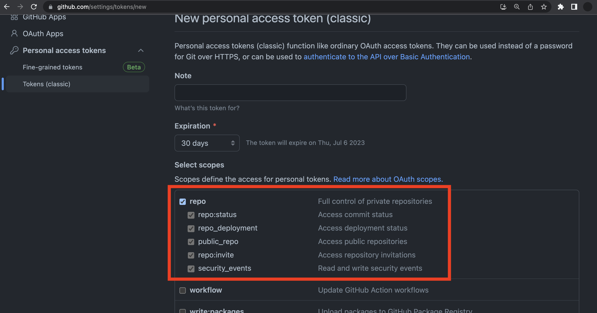
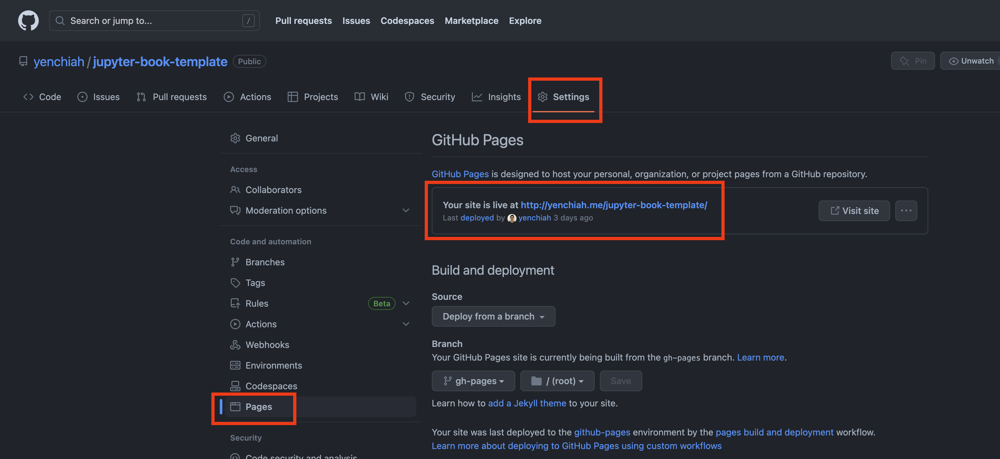
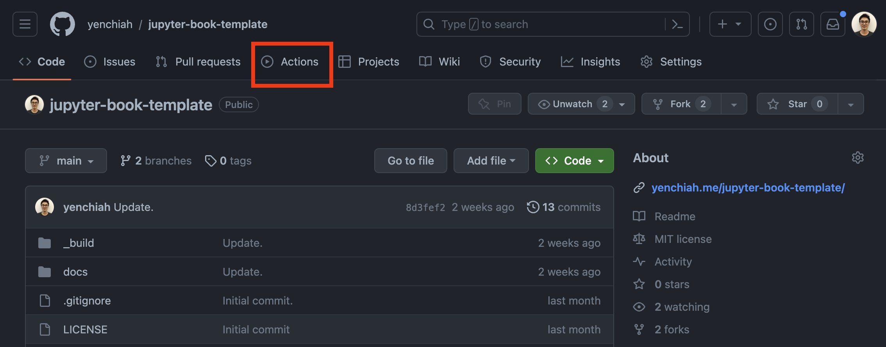
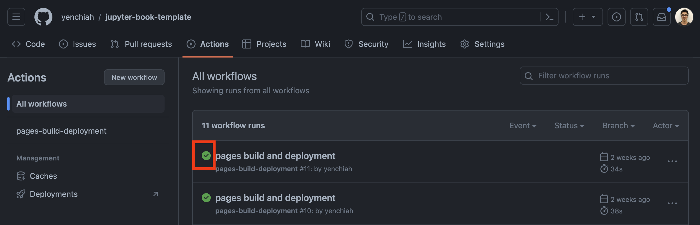

Jupyter Book Tutorial
Contents
Jupyter Book Tutorial#
(Last updated: June 20, 2023)
In this tutorial, we will teach you how to create a Jupyter book and deploy it online. This page is written in markdown, which also serves as an example. All the content on this website is licensed under a Creative Commons Attribution-NonCommercial-ShareAlike 4.0 International License.
Note
This tutorial only mentions the basics.
For more advanced usage of Jupyter Book (e.g., using this special content block, editing the configuration file _config.yml, editing the table of content file _toc.yml, etc.), check the Jupyter Book documentation for more information.
Table of contents#
Prerequisites#
Please make sure you have all the prerequisites ready before continuing this tutorial.
Register a GitHub account#
We will use GitHub Pages to deploy your compiled book, which means that you need to register a GitHub account.
Create a GitHub personal access token#
GitHub has a new policy that you can no longer use your account password to push file changes. You must create a personal access token and use the token when pushing changes to a GitHub repository. You also need to give the token proper access permissions/scopes, as indicated in the following image:

Install the environment to run Jupyter notebook#
We assume that you have installed the environment that can edit and run Jupyter Notebook files. If you have not done so, check the Jupyter website for how to install the user interface and environment.
Install git and Git Bash (Windows only)#
You need a terminal (e.g., Bash or Zsh) to work with Jupyter Book.
If you are on Windows, install the git tool, which comes with a terminal called Git Bash.
If you are on Mac or Linux, the git tool is already installed, so you can just open the terminal and start typing commands.
Familiarize yourself with git#
You will need to use git to work with the GitHub Pages, which requires some basic understanding of using git.
If you are new to this idea, check the git guide.
Also, here is a 15-minute Git tutorial video that covers what you need for this course.
Step 1: Install conda#
The first step is installing the conda virtual environment using miniconda or anaconda.
Pick either one of them and follow the instructions on the website to install conda so that you can use the conda command on your terminal.
We recommend using miniconda since it is light-weighted, and you can avoid waiting for a long time to install many packages that may not be necessary. If you already have the conda environment ready on your machine, you can skip this step.
For Mac users, you can also install miniconda using the Homebrew package manager:
brew cask install miniconda
echo 'export PATH="/usr/local/Caskroom/miniconda/base/bin:$PATH"' >> ~/.bash_profile
echo '. /usr/local/Caskroom/miniconda/base/etc/profile.d/conda.sh' >> ~/.bash_profile
source ~/.bash_profile
Important
If you are using Windows, choose the way of using the installer to set up conda (not the portable one). When running the installation, make sure that you need to tick the box to allow the installer to set the system environment path for conda. Otherwise, your terminal will not be able to find the conda command.
Step 2: Install Jupyter Book#
In this step, you will install the Jupyter Book package. Notice that there are two sections in this step. One for Mac/Linux users, and another one for Windows users.
For Mac and Linux to install Jupyter Book#
Now, create a new conda environment using the command below. We need to install Jupyter Book in the conda environment.
conda create -n jupyterbook
After you have the environment ready, activate it.
conda activate jupyterbook
Then, install Python in the environment.
conda install python
Next, install pip and check if the path of pip is correct.
conda install pip
which pip # make sure this is the pip inside the jupyterbook environment, which means the path should contains the "jupyterbook" string
Finally, install the packages that are needed for building and compiling notebooks.
pip install -U jupyter-book
Check if Jupyter Book is installed correctly using the following command. Having no error messages means that Jupyter Book is installed correctly.
jupyter-book --help
For Windows to install Jupyter Book#
Windows has a known problem that the conda installation for Jupyter Book can be pending forever. We have figured out a specific solution for this. You need to follow the exact ordering in this part. Missing any step or using the incorrect ordering can result in a forever-pending problem.
First, open your Git Bash that comes with the git tool installation. If you do not know where to find your Git Bash, search it in the search bar near the Windows start button. Do not use the Window command prompt, as it is using a different command line system and will not work for our case.
When you open the terminal, you should see a (base) text in the terminal, such as below:
(base) abc@ABC-windows ~
If you did not see it, run the following:
conda activate
The above command should now brings you to the (base) environment in conda.
If there is an error message, it is possible that your terminal does not recognize conda yet.
In this case, run the following:
conda init bash
Then, close your Git Bash and re-open it.
Now, you should be in the (base) conda environment.
Important
Sometimes the terminal needs to load new settings after you install new things, such as conda. Make sure that you close the entire terminal program and re-launch it.
Next, create a new conda environment.
conda create -n jupyterbook
After you have the environment ready, activate it.
conda activate jupyterbook
Then, install Jupyter Book using conda install. Do not use pip install, which will likely cause errors.
conda install -c conda-forge jupyter-book
This installation may take several minutes, as conda needs to solve the environment. So please be patient and wait until it is finished.
Finally, check if Jupyter Book is installed correctly using the following command. Having no error messages means that Jupyter Book is installed correctly.
jupyter-book --help
Step 3: Create a new repository#
Next, we need to create a new repository to host your website and code using this tutorial as the template. Clone our tutorial repository (which downloads the code to your local machine):
git clone https://github.com/yenchiah/jupyter-book-template
The cloned tutorial repository has the template files that you need to build your website. We are only using the template for reference.
Next, go into the template folder and delete the old git history from the template since we do not need them.
cd jupyter-book-template
rm -rf .git
cd ..
To have your repository that can host your website and code, create a new repository and work from there.
Make sure that your repository is public, and do not add a README file.
You also do not need to add the .gitignore file and license.
Then, clone your newly created (and currently empty) repository to your local machine.
Remember to use the proper account user name (i.e., replacing MY_USER_NAME) and repository name (i.e., replacing MY_REPOSITORY_NAME) in the URL that you want to clone.
git clone https://github.com/MY_USER_NAME/MY_REPOSITORY_NAME
# Below is one example of the URL
# https://github.com/abc/example-repo
Now, copy all the template files and folders from the tutorial repository to this newly created repository.
Again, remember to use the correct repository name (i.e., replacing MY_REPOSITORY_NAME to your repository name).
cp -r jupyter-book-template/* MY_REPOSITORY_NAME/
Warning
Notice that you need to use a terminal to copy all the files (but not drag/drop or copy/paste files with the user interface).
Otherwise, you will fail to copy the hidden files, such as the .gitignore or .gitmodules files.
Step 4: Build the book locally#
Now we are going to compile and build your book on your local machine. Inside your conda environment, we need to install some required Python packages:
pip install -U numpy
pip install -U plotly
pip install -U pandas
pip install -U matplotlib
pip install -U seaborn
To build the book, run the following command.
Remember that you must go to the repository folder (i.e., replacing MY_REPOSITORY_NAME) that you just cloned.
cd MY_REPOSITORY_NAME
jupyter-book build .
The above command only builds the newly-updated files since the last time you built the book. Sometimes you may want to build the entire book from scratch, and you can use the following:
jupyter-book build --all .
After building the book, all the html files in the _build/html/ directory will be updated.
You can then use your browser to open the files locally on your machine to view the compiled notebooks and markdown files.
You can also install a local Apache HTTP Server to view the files since the html files are sometimes incorrectly displayed if opened using a browser.
We also already set up the configuration file _config.yml and the table of content file _toc.yml for you.
For more information about how to edit them, check this documentation.
Step 5: Deploy the book online#
Now, we have the compiled website files ready, and we can move on to deploy the website. We will do this using the GitHub Pages.
First, go to the repository folder on your computer and use git add to indicate that you want to push these files to the remote GitHub repository.
Replace MY_REPOSITORY_NAME with your repository name.
cd MY_REPOSITORY_NAME
git add .
Run the following to check if you add the files. You should see green marked messages in the terminal.
git status
Then, commit the changes that you want to make using a message.
git commit -m "Add my first book!"
Next, push your code and files on your local machine to your remote repository.
git push
The above commands push your code to the main branch. However, we need to use the ghp-import package to push your website code to a separate branch. To use the package, run the following to install it:
# For Mac and Linux users
pip install -U ghp-import
# For Windows users
conda install -c conda-forge ghp-import
Then, run the following command to push your html files to the gh-pages branch.
ghp-import -n -p -f _build/html
After this, go to the URL that points to your GitHub repository, click “Settings” -> “Pages” to go to the page settings. You should see a message similar to “Your site is live at [XXX]”, where “[XXX]” is your website URL that is publicly accessible, as shown below:

Also, sometimes it will take a while for GitHub to update your webpage content. You can check the “Actions” page to check the status. For example, here is the Actions page for our tutorial repository.
You now have the public URL for your website. More information about how to publish your book can be found on this documentation.
Update the website content#
After completing all the above steps, you should now have a remote repository on GitHub and a local repository on your computer.
Your local repository should be a folder with the name that we asked you to rename (i.e., the MY_REPOSITORY_NAME in the previous steps).
If you are still confused about why there are remote and local repositories, check the 15-minute Git tutorial video that is mentioned in the Prerequisites.
If you cannot find the location of the folder on your computer, find it using the search functionality on your computer’s operating system. For Windows users, there should be a search bar near the Windows start menu. For Mac users, there should be a magnifying glass icon at the top right.
Now you can start to work on your notebook or markdown files.
We recommend that you start with the notebook.ipynb file and replace the content with your code and text.
If you already have an existing notebook, you can replace the original notebook.ipynb file with your notebook and rename the file with notebook.ipynb.
To update the content of your website, repeat step 4 and 5 without the package installation parts. Step 4 will rebuild the book, which means compiling/translating the notebook and markdown files into HTML/CSS/JavaScript files. Step 5 will push your new content to the GitHub repository and update the online content of your website.
Every time you build some new files (or updated files), you need to rebuild the book and push new changes to your remote GitHub repository. This, again, will take some time for GitHub to process the changes and update the website. You can check the Actions page (as shown in the image below) for the status.

If the Actions page shows that the status is good with a green checkmark (as shown in the image below), it means that the webpage is successfully updated. If you still do not see the changes on your browser, either wait for a while or clear the browser cache. Search online (e.g., Google) to know how to clear your browser cache.

If you have multiple notebook files that you want to add to the website, you will need to edit the _toc.yml file.
Check this Jupyter Book documentation about how to edit the table of content.
Troubleshooting#
Below we list some common errors and possible solutions. If you still encounter problems, search online to figure out how other people tackle similar problems. You can copy/paste the error message in the search query. You may be able to find solutions on Stack Overflow or other people’s blogs.
Q1: I get errors when running the jupyter-book build command. What should I do?
It is possible that your packages in the conda environment are too old. Try upgrading your conda environment and also the Python packages in the environment.
If there are still errors, create a new conda environment and use a different way to install Jupyter Book. For example, if you used
pip install, try usingconda installinstead.Check if you use some packages that you did not install in your
jupyterbookconda environment. Install the missing packages.
Q2: I get errors after running the ghp-import or git push commands after entering my personal access token. What should I do?
Check if your personal access token has expired on GitHub. You can create a new token and give it a longer expiration time.
Try to create a new personal access token on GitHub and give it the permissions/scopes of editing repositories. The token that you created may have the wrong permissions/scopes, so you cannot push changes to GitHub.
Check if there are messages in your terminal that tell you to do something. For example, you may be asked to add the URL to your repository by using
git remote add. Or you may be asked to run a differentgit pushcommand.
Q3: My Jupyter Book installation is still pending forever after following step 2. What should I do?
Try using a different terminal for installation, such as the Anaconda command prompt.
Try closing the entire terminal program and re-run step 2 again. Do not skip any commands.
Q4: I followed all the steps but my webpage does not have anything, or my webpage is not updated. What should I do?
Check if your repository has the (updated) content. You may fail to push the code correctly to the GitHub repository. You can check this by using
git status, which should indicate that you have no pending changes.Sometimes it will take a while for GitHub to update your page. Give it some time and check later. You can go to the “Actions” page in your GitHub repository to check the status.
Your browser may have an old cache that does not reflect new changes. Search online about how to clear your browser cache. After cleaning the cache, check the website again.